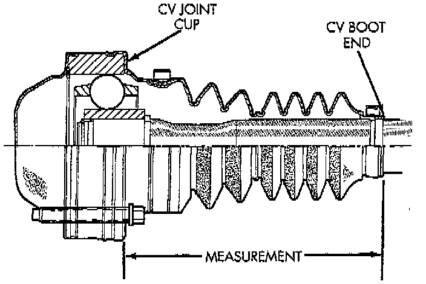
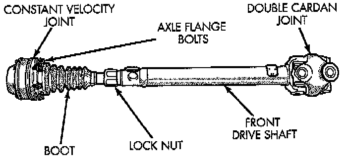

Shaft Measurement
NOTE: A propeller shaft that has been in use for a long period of time cannot be adjusted. If the length of the propeller is incorrect and causing vibration, replace the propeller shaft.This measurement is only necessary for the CV style propeller shaft and is to be taken with the shaft installed and the vehicle at proper ride height.
1. Place vehicle on floor or drive-on hoist with full weight of vehicle on suspension.

2. Measure the distance from the face of the CV joint cup to the end of the CV joint boot.
3. Loosen the lock nut and adjust the distance by moving the end of the shaft in or out of the other end.

4. When the shaft is adjusted to the correct length of 142.7 mm (5.61 inch), tighten the lock-nut to 115 Nm (85 ft. lbs.).